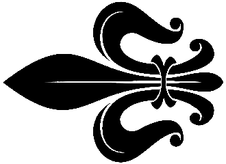

Conspiratio
 Links 
Hier findet Ihr Links zu anderen interessanten Seiten
Commercia
Commercia ist eine rundenbasierte Handelssimulation für 1-6 Spieler.
gilde2.de
Große Community zu den Spielen Die Gilde, Die Gilde 2 und Die Gilde 3.
Wikipedia Die Fugger II
Wikipedia-Artikel zum Kultspiel Die Fugger II.
Commercia
Commercia ist eine rundenbasierte Handelssimulation für 1-6 Spieler.
gilde2.de
Große Community zu den Spielen Die Gilde, Die Gilde 2 und Die Gilde 3.
Wikipedia Die Fugger II
Wikipedia-Artikel zum Kultspiel Die Fugger II.